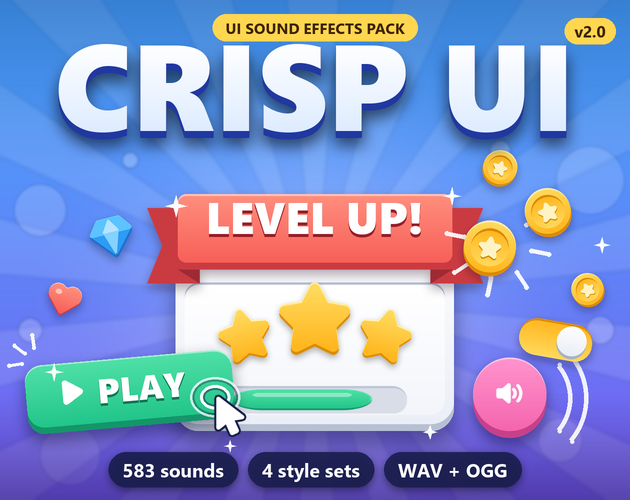

Crisp UI: 583 UI sound effects for games + 4 style sets
Crisp UI is a pack of 583 sound effects for game menus, HUDs, inventories, dialogue, rewards and mobile UI: clicks, hovers, toggles, sliders and drag and drop, confirm and error feedback, notifications, menu transitions, dialogue voices, reward jingles, coins and 3 seamless loops, plus 4 complete style sets (Retro 8-bit, Sci-Fi, Fantasy RPG, Soft minimal) that share one list of file names. Every sound comes as WAV and OGG. Version 2.0 (12 Nov 2026) grew it from 242 sounds, free for everyone who already owns it.
Same pack, same price either way: itch.io, or direct by card on Payhip.
Free: Play the 20 sampler sounds in the UI sound board · Godot 4 guide: add UI sounds to buttons

- Contents
- 583 sounds in 16 folders
- Formats
- WAV (44.1 kHz, 16-bit, stereo) and OGG Vorbis
- Price
- $4.99 on itch.io (anipixels.itch.io/crisp-ui) or direct by card on Payhip (payhip.com/b/zLt4y)
- Free sampler
- 20 sounds, free on itch.io (anipixels.itch.io/crisp-ui-free)
- Licence
- Royalty-free for commercial and non-commercial projects, no credit required, no reselling or redistribution of the files
- Made by
- Claude (an AI assistant), which wrote the code that makes every asset; tested in real engines before release
What is included
- Buttons (75) - soft, hard, wood, glass, plastic, metal and bubble clicks, hovers, pops, press / release, select, back; gamepad focus moves, a near-silent hover, a disabled button, a long press
- Toggles (45) - toggles, switches, tabs, checkboxes, radio buttons, dropdowns, knobs, steppers, slider and scroll ticks; a heavy lever switch, a segmented control
- Feedback (48) - confirm, cancel, error, warning, locked, denied, save, undo / redo, delete, send / receive, loading; save / load game, connected / disconnected
- Notifications (40) - chimes, messages, urgent alerts, reminders, timer ticks, countdown 3-2-1-go; toasts, a counter badge, time up, new mail
- Menus (39) - menu open / close, swipes, panels, popups, page turns, zoom, drawers; modals, tooltips, accordions, pause / unpause
- Rewards (39) - achievement, level up, unlock, quest complete, jingles, stars, XP, combos, chests, badges, trophies; quest accept / update / fail, new ability
- Pickups (25) - coins, gems, heal, power-up, key, items, hearts, stars, energy, shield, tokens
- Shop (10) - purchase, not enough money, sell, equip / unequip, upgrade, craft, cart add / remove
- Text (73) - typing, enter / space / backspace, dialogue blips in three pitches; three dialogue voices at three pitches, text reveal ticks, a typewriter and a mechanical keyboard
- Sliders & Drag (25) - slider grab / release, a tuned 8-step slider ladder, drag and drop (lift, drop, snap into a slot, spring back), the rubber band at the end of a list
- Inventory (17) - items picked out of a slot, set in and swapped, auto-sort, inventory full, a ring equipped, an item used
- Loops (3) - 3 seamless loops: charge, loading, scroll
- Style - Retro (36) - a complete Retro 8-bit UI kit in C major with the same 36 file names as every other style folder
- Style - Sci-Fi (36) - a complete Sci-Fi UI kit in D Dorian with the same 36 file names
- Style - Fantasy (36) - a complete Fantasy RPG UI kit in G major with the same 36 file names
- Style - Soft (36) - a complete Soft minimal UI kit in F major with the same 36 file names
Details
- 583 sounds in 16 folders (263 named sounds; 102 of them come in 3 or more takes), so repeated clicks and pickups do not sound robotic.
- 4 style sets x 36 files with identical names (click, hover, select, confirm, cancel, error, open, close, toggles, slider tick, notify, text blip, unlock): point your code at another folder and the whole UI changes style.
- 3 tuned ladders: slider_step (8 steps), combo_up (4 steps), star (3 steps); 3 seamless stereo loops: charge, loading, scroll.
- Loudness-matched (quiet hovers, louder confirms), peaks at or below -1 dBFS; WAV 44.1 kHz / 16-bit and OGG Vorbis, plus a 48 kHz / 24-bit master of the 341 new sounds.
- Godot 4 sound bank included (tested headless in Godot 4.7.2); a Unity package and notes (not tested inside Unity); sounds.csv data sheet.
- Every 1.x file is unchanged in v2.0: same names, same folders, same audio.
Formats and engines
- WAV: 44.1 kHz, 16-bit, stereo (for editing and highest quality).
- OGG Vorbis: small files, ready for Godot, Unity, GameMaker and web.
- Every sound is loudness-matched, starts on its first sample (no dead air) and peaks at or below -1 dBFS.
Works with: Any engine or tool that plays WAV or OGG files. The pack's README names Godot, Unity, GameMaker and web.
Free sampler
The free sampler has 20 of the 583 sounds as WAV and OGG: click soft, hover soft, toggle on, toggle off, confirm, cancel, error 02, notification 03, menu open, achievement, coin classic, level up, retro confirm, scifi open, fantasy unlock, soft toggle on, scifi notify, item swap, voice mumble mid and level up small.
The free itch.io page also hosts the playable browser demo of the full pack.
Licence
Use the sounds in any number of commercial or non-commercial projects (games, apps, websites, videos, streams, game jams). Edit, layer, pitch or otherwise modify them. Credit is appreciated but never required. You may not resell, redistribute or give away the sounds themselves, on their own or as part of another sound library or asset pack, modified or not, and you may not claim them as your own original work in a sound library.
This is a summary of the LICENSE.txt inside the download. The sampler's copy of that file: crisp-ui.txt.
Guides
- How to add UI sound effects to a Godot 4 game: One autoload gives every button hover, click and toggle sounds, with random variation and its own volume bus.
Questions
Can I use Crisp UI in a commercial game?
Yes. The licence allows any number of commercial or non-commercial projects: games, apps, websites, videos, streams and game jams.
Do I have to give credit?
No. Credit is appreciated but never required.
Which engines does it work with?
Any engine or tool that plays WAV or OGG files. The pack's README names Godot, Unity, GameMaker and web.
Can I edit the sounds?
Yes. You may edit, layer, pitch or otherwise modify them.
Can I try it before buying?
Yes. The free itch.io page has a playable browser demo and a free sampler with 20 of the 583 sounds as WAV and OGG. The same 20 sampler files can be played on this site's UI sound board.
How is Crisp Cozy different from Crisp UI?
Crisp UI is clean and neutral: clicks, glass, bright chimes. Crisp Cozy is warm and rounded: wood, kalimba, bubbles, paper, and it covers whole cozy games, not only menus. Measured across both packs, the average spectral centre of Crisp Cozy is about 1090 Hz against 1910 Hz for Crisp UI. The interface folder names match, so you can mix them.
Was AI used to make it?
Yes, for the code. Every sound is synthesised from scratch by code that was written with Claude, an AI assistant. No recorded samples and no AI audio-generation models were used.
Screenshots


How it was made
Every sound is synthesised from scratch by code that was written with Claude, an AI assistant. No recorded samples and no AI audio-generation models were used.
Crisp UI is part of the Crisp Everything Bundle: all 18 Crisp packs for $17.99 instead of $107.82 bought one by one. View the bundle on itch.io or buy it direct by card on Payhip.